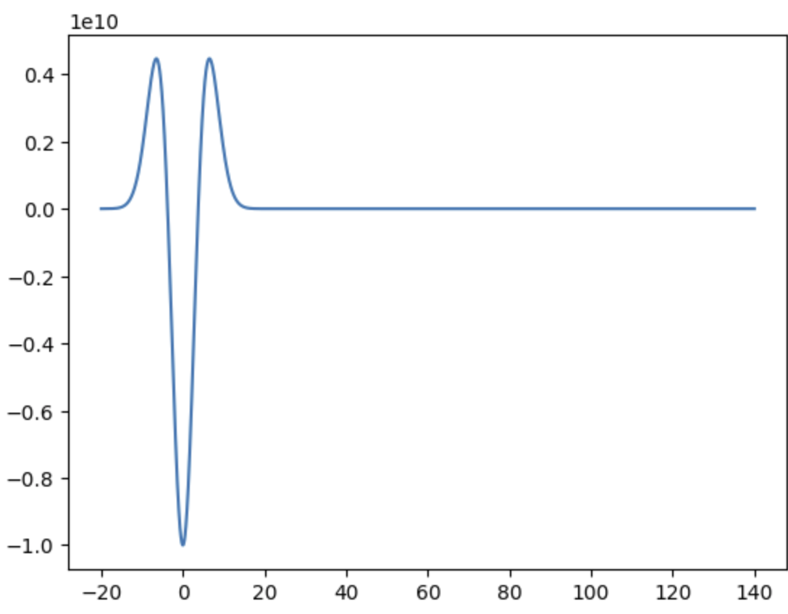
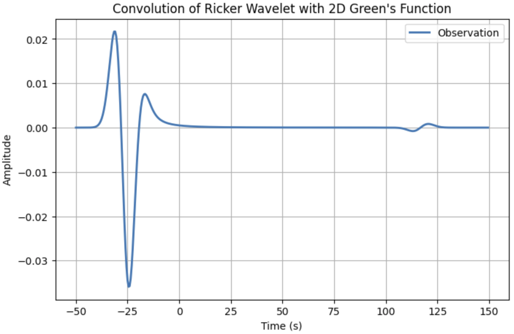
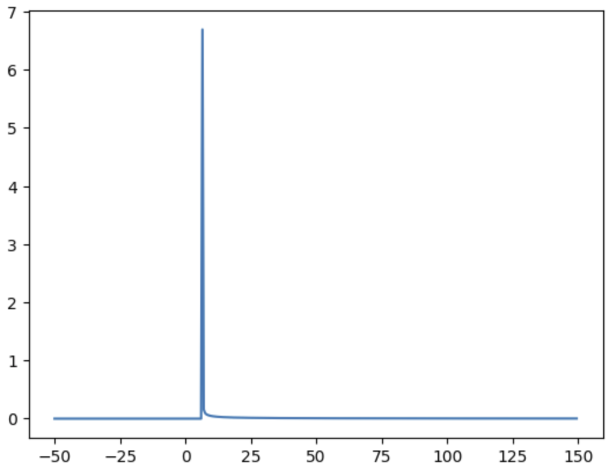
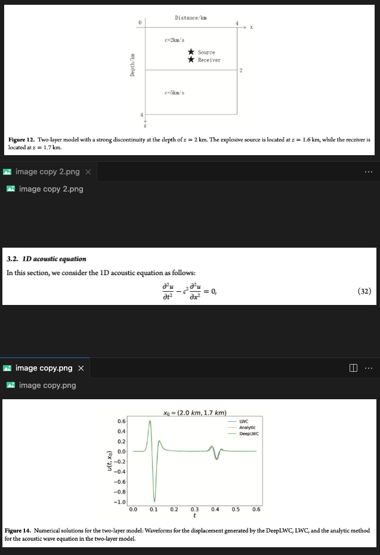

2D的非对称性
问题导出
2D 模拟中源设置成ricker wave, 但是台站接受到的并不是一个对称的ricker wave, 两端的凸起并不一样长.
源:

接收信号:

起初认为是数值计算误差.
Green function
2D wave equation
Green function
where
is Heaviside step function
注意到格林函数并不是直接的狄拉克函数, 所以卷积上源后当然不会拥有狄拉克函数的卷积即搬运的性质, 台站接收到的信号不对称是正常的.
H 和 狄拉克函数的关系:
step function
注意数值计算中不要直接用这种定义:
误差太大. 可以用以下连续函数来近似:

分母为0的处理
分母有一个:
- 当它趋于0时,分子为1,则整个Green function趋于无穷大.
- 当它等于0时,分子为1,则Green为无穷大
- 当它小于0时,分子为0,分母开根号为复数,Green 为0
则比较麻烦的是这个无穷大的处理, 可以定义为加上一个无穷小量,至于小于0的部分也要注意,需要保证近似后的H比近似后的分母小得多!保证其为0:
def SQ(x):
a=[]
for t in x:
if t<=0:
a.append(1e-3)
elif t>0:
a.append(np.sqrt(t))
return np.array(a)
不能直接用小于0时加上小误差, 比如为-1, 加上小误差之后开根还是为负, 会报错
实操
k=10
近似 时取 , 分母用上述代码,定义小误差. 则得到格林函数如下:

卷积

暂时不清楚后面那个横坐标125处的wave怎么来的.
- 到时是否对得上不是本文关注的内容, 这需要调整和理解python的卷机函数来实现
- 振幅的绝对大小也有问题, 需要考察格林函数的近似效果, 比如这里最大值为0.16,可能不合理
本文重点关注的波的形态. 发现两个“肩膀”确实不对称, 和sem数值模拟的结果相似
k=5
这时H的step没有那么陡,分母趋近于0时的值很大,相应地,格林函数最大值就比较大,整个形状近似出来更接近一个尖锐的狄拉克函数:

这个时候再做卷机,得到的结果也更近似狄拉克函数的搬运效果

并不是我的sem计算设置出错导致的shoulder不对称
在下面文章中也出现了这样的现象:
Chang, Yunfan, Dinghui Yang, and Xijun He. "A deep learning operator-based numerical scheme method for solving 1-D wave equations." Journal of Geophysics and Engineering (2024): gxae062.

- 作者并没有直接提到所用的2D波动方程,但是根据1D的来推断,应该和我地震学中的是同一个
- 作者并不是单一介质,而是双层. 但是源和台站在同一个介质中,在遇到界面之前还是一个单一介质的问题
- 震中距0.1km,波速说2km/s. 走时和子图3的有差别, 有可能是子波给了time shift
- 作者没有说2D用的什么类型的源. 最恶劣的情况就是他故意用了一个不对称的像ricker wave,但又不是的. 我觉得这种可能性应该是没有的, 正常人应该不会这么无聊吧?....
类似例子还有很多:网址
{kind=link}
2D 数值模拟结果表明:随着传播距离的增加, 左边那个shoulder和右边那个shoulder的高度差会逐渐增大
总结
2D的格林函数, 波场都不是“对称”的, 注意不要错误想象!!
顺便也解释了另两个现象:
- 当sem设置的源是冲击源的时候,模拟出来的波场不是一个干净的冲击,而是带有长长的衰减的尾巴.
- 当sem设置的源是正弦函数的时候,台站接收到的也不是一个sin函数,而是直观看来整体带有一个倾斜的趋势,(甚至可能形状和sin还有出入,这一点尚未考证).
测试用的代码
import numpy as np
import scipy.signal as signal
import matplotlib.pyplot as plt
# Parameters
f0 = 0.06 # Central frequency (Hz)
c = 3.0 # Wave speed (m/s)
dt = 0.5 # Time step (s)
t = np.arange(-50, 150, dt) # Time vector
# Generate Ricker wavelet
def ricker_wavelet(t, f0):
"""Ricker wavelet (second derivative of Gaussian)."""
t0 = 1.0 / f0 # Central time shift
pi_f0_t = np.pi * f0 * (t - t0)
return -(1 - 2 * pi_f0_t**2) * np.exp(-pi_f0_t**2)
ricker = ricker_wavelet(t, f0)
# Compute Green's function for 2D wave equation
def H(x):
k=5
return 1/(1+np.exp(-2*k*x))
def SQ(x):
a=[]
for t in x:
if t<=0:
a.append(1e-3)
elif t>0:
a.append(np.sqrt(t))
return np.array(a)
def green_function_2d(r, t, c):
"""2D wave equation Green's function."""
t_shifted = c*t - r
return H(t_shifted)/(2*np.pi*SQ(c**2*t**2-r**2))
r = 20 # Distance from source (m)
green = green_function_2d(r, t, c)
# Convolve Ricker wavelet with Green's function
observation = signal.convolve(ricker, green, mode='same') * dt
# Plot results
plt.figure(figsize=(8, 5))
# plt.plot(t, ricker, label="Ricker Wavelet", linestyle="--")
# plt.plot(t, green, label="Green's Function")
plt.plot(t,observation, label="Observation", linewidth=2)
plt.xlabel("Time (s)")
plt.ylabel("Amplitude")
plt.legend()
plt.title("Convolution of Ricker Wavelet with 2D Green's Function")
plt.grid()
plt.show()